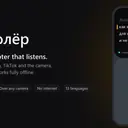

Suflyor (Суфлёр): free voice-following teleprompter app for Android. Scrolls as you speak, floats over Instagram, TikTok and the camera. Speech recognized on the phone in 13 languages, no internet per
SHA-256: 6dc420d771dae72686549db972417579a14a912874c980c71ba34466bcecbcd7
متفحّص آليًا (ترخيص مفتوح + بصمة SHA-256) لكن مش مراجَع يدويًا.
Checked automatically (open license + SHA-256), not manually reviewed.
امسح الكود لفتح صفحة التطبيق
Scan to open this app page
لو كنز مش متثبت عندك: نزّل متجر كنز.
Not installed? Get the Kanz store.